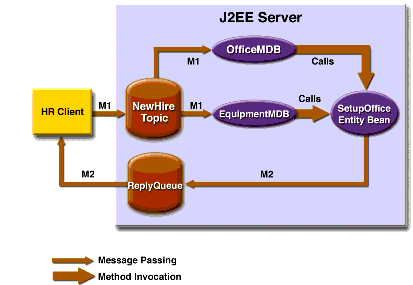

A J2EE Application That Uses the JMS API with an Entity Bean
This section explains how to write, compile, package, deploy, and run a J2EE application that uses the JMS API with an entity bean. The application uses the following components:
This section covers the following topics:
You will find the source files for this section in the directory
<INSTALL>/j2eetutorial14/examples/jms/clientmdbentity/. Path names in this section are relative to this directory.Overview of the Human Resources Application
This application simulates, in a simplified way, the work flow of a company's human resources (HR) department when it processes a new hire. This application also demonstrates how to use the J2EE platform to accomplish a task that many JMS client applications perform.
A JMS client must often wait for several messages from various sources. It then uses the information in all these messages to assemble a message that it then sends to another destination. The common term for this process is joining messages. Such a task must be transactional, with all the receives and the send as a single transaction. If not all the messages are received successfully, the transaction can be rolled back. For a client example that illustrates this task, see A Local Transaction Example.
A message-driven bean can process only one message at a time in a transaction. To provide the ability to join messages, a J2EE application can have the message-driven bean store the interim information in an entity bean. The entity bean can then determine whether all the information has been received; when it has, the entity bean can create and send the message to the other destination. After it has completed its task, the entity bean can remove itself.
The basic steps of the application are as follows.
- The HR department's application client generates an employee ID for each new hire and then publishes a message (M1) containing the new hire's name and employee ID. The client then creates a temporary queue,
ReplyQueue, with a message listener that waits for a reply to the message. (See Creating Temporary Destinations, for more information.)- Two message-driven beans process each message: One bean,
OfficeMDB, assigns the new hire's office number, and the other bean,EquipmentMDB, assigns the new hire's equipment. The first bean to process the message creates an entity bean namedSetupOfficeto store the information it has generated. The second bean locates the existing entity bean and adds its information.- When both the office and the equipment have been assigned, the entity bean sends to the reply queue a message (M2) describing the assignments. Then it removes itself. The application client's message listener retrieves the information.
Figure 34-2 illustrates the structure of this application. Of course, an actual HR application would have more components; other beans could set up payroll and benefits records, schedule orientation, and so on.

Figure 34-2 A J2EE Application: Client to Message-Driven Beans to Entity Bean
Writing the Application Components
Writing the components of the application involves the following:
Coding the Application Client: HumanResourceClient.java
The application client program,
src/HumanResourceClient.java, performs the following steps:
- Uses the JNDI naming context
java:comp/envto look up aConnectionFactoryand a topic- Creates a
TemporaryQueueto receive notification of processing that occurs, based on new-hire events it has published- Creates a
MessageConsumerfor theTemporaryQueue, sets theMessageConsumer's message listener, and starts the connection- Creates a
MessageProducerand aMapMessage- Creates five new employees with randomly generated names, positions, and ID numbers (in sequence) and publishes five messages containing this information
The message listener,
HRListener, waits for messages that contain the assigned office and equipment for each employee. When a message arrives, the message listener displays the information received and determines whether all five messages have arrived. When they have, the message listener notifies the main program, which then exits.Coding the Message-Driven Beans
This example uses two message-driven beans:
src/ReserveEquipmentMsgBean.javaandsrc/ReserveOfficeMsgBean.java. The beans take the following steps.
- The
ejbCreatemethod gets a handle to the local home interface of the entity bean.- The
onMessagemethod retrieves the information in the message. TheReserveEquipmentMsgBean'sonMessagemethod chooses equipment, based on the new hire's position; theReserveOfficeMsgBean'sonMessagemethod randomly generates an office number.- After a slight delay to simulate real world processing hitches, the
onMessagemethod calls a helper method,compose.- The
composemethod either creates or finds, by primary key, theSetupOfficeentity bean and uses it to store the equipment or the office information in the database.Coding the Entity Bean
The
SetupOfficebean is an entity bean that uses a local interface. The local interface means that the entity bean and the message-driven beans run in the same Java virtual machine (JVM) for maximum efficiency. The entity bean has these components:The local home interface source file is
src/SetupOfficeLocalHome.java. It declares the create method, calledcreateLocal(because the bean uses a local interface), and one finder method,findByPrimaryKey.The local interface,
src/SetupOfficeLocal.java, declares several business methods that get and manipulate new-hire data.The bean class,
src/SetupOfficeBean.java, implements the business methods and their helper method,checkIfSetupComplete. The bean class also implements the required methodsejbCreateLocal,ejbPostCreateLocal,setEntityContext,unsetEntityContext,ejbRemove,ejbActivate,ejbPassivate,ejbLoad, andejbStore.The only methods called by the message-driven beans are the business methods declared in the local interface, along with the
findByPrimaryKeyandcreateLocalmethods declared in the local home interface. The entity bean uses container-managed persistence, so all database calls are generated automatically.Creating and Packaging the Application
This example uses a connection factory named
jms/TopicConnectionFactoryand a topic namedjms/Topic, both of which you created in Chapter 33. (See Creating JMS Administered Objects, for instructions.) It also uses a JDBC resource namedjdbc/__default, which is enabled by default when you start the Application Server.Creating and packaging this application involve seven steps:
You can package the application yourself as an exercise. Use the
asantbuildtarget to compile the source files.This section uses the prepackaged EAR file to show how to create and package the application.
Examining the Application
- In
deploytool, open theClientMDBEntityApp.earfile, which resides in the directory<INSTALL>/j2eetutorial14/examples/jms/provided-ears.- Expand the
EBJARnode and select the entity beanSetupOffice.
- In the General tab, notice that the bean,
SetupOffice, uses local interfaces. The local home interface iseb.SetupOfficeLocalHome; the local interface iseb.SetupOfficeLocal; and the bean class iseb.SetupOfficeBean.- Click the Entity tab. The bean uses container-managed persistence. All six fields in the bean class are persisted. The abstract schema name is the same as the bean name. The primary key class is an existing field,
employeeId.- In the Entity screen, click CMP Database (Sun-specific). The application uses the preconfigured
jdbc/__defaultJDBC resource.- Click the Resource Ref's tab. The bean uses the connection factory
jms/ConnectionFactoryto send reply messages to the application client. The application looks up the coded namejms/MyConnectionFactoryand casts the object to an object of typejavax.jms.ConnectionFactory. The bean does not specify any message destination references, however, because it uses a temporary destination for the reply messages.- Select either of the message-driven beans:
EquipmentMDBorOfficeMDB. They are configured identically.
- Click the Message-Driven tab. The beans use the destination type
javax.jms.Topic, the target message destinationPhysicalTopic, and the connection factoryjms/ConnectionFactory.- Click the EJB Ref's tab. Both beans reference the entity bean using local references. The coded name is
ejb/local/SetupOffice. The Target EJB is the enterprise bean name.- Select the
HumanResourceClientnode.
- Click the Resource Ref's tab. The client uses the connection factory
jms/ConnectionFactoryboth to send messages to a topic and to receive messages from a temporary queue. The application looks up the coded namejms/MyConnectionFactoryand casts the object to an object of typejavax.jms.ConnectionFactory.- Click the Msg Dest Ref's tab. The coded name
jms/NewHireTopicrefers to the target destinationPhysicalTopic, of typejavax.jms.Topic. The usage is set to Produces.- Click the Message Destinations tab, and then click
PhysicalTopic. The client appears in the Producers area, and the message-driven beans appear in the Consumers area. The destination name refers to the JNDI namejms/Topic.- Notice that for all the bean components, the Transactions tab is set to Container-Managed.
- Select the
ClientMDBEntityAppnode and click the Sun-specific Settings button. On the JNDI Names screen, the JNDI name for the message-driven beans is the topic destination resource,jms/Topic.Verify that the JNDI names for the application components are correct. They should appear as shown in Tables 34-3 and 34-4.
EquipmentMDBjms/TopicOfficeMDBjms/Topic
Deploying the Application
- Start the Derby server, if it is not already running. For instructions, see Starting and Stopping the Derby Database Server.
- Save the application.
- Deploy the application. Select the Return Client Jar checkbox.
You will find a file named
ClientMDBEntityAppClient.jarin theprovided-earsdirectory.Running the Application Client
To run the client, use the following command:
The program output in the terminal window looks something like this:
PUBLISHER: Setting hire ID to 25, name Gertrude Bourbon, position Senior Programmer PUBLISHER: Setting hire ID to 26, name Jack Verdon, position Manager PUBLISHER: Setting hire ID to 27, name Fred Tudor, position Manager PUBLISHER: Setting hire ID to 28, name Fred Martin, position Programmer PUBLISHER: Setting hire ID to 29, name Mary Stuart, position Manager Waiting for 5 message(s) New hire event processed: Employee ID: 25 Name: Gertrude Bourbon Equipment: Laptop Office number: 183 Waiting for 4 message(s) New hire event processed: Employee ID: 26 Name: Jack Verdon Equipment: Pager Office number: 20 Waiting for 3 message(s) New hire event processed: Employee ID: 27 Name: Fred Tudor Equipment: Pager Office number: 51 Waiting for 2 message(s) New hire event processed: Employee ID: 28 Name: Fred Martin Equipment: Desktop System Office number: 141 Waiting for 1 message(s) New hire event processed: Employee ID: 29 Name: Mary Stuart Equipment: Pager Office number: 238The output from the enterprise beans appears in the server log, wrapped in logging information. For each employee, the application first creates the entity bean and then finds it. You may see runtime errors in the server log, and transaction rollbacks may occur. The errors occur if both of the message-driven beans discover at the same time that the entity bean does not yet exist, so they both try to create it. The first attempt succeeds, but the second fails because the bean already exists. After the rollback, the second message-driven bean tries again and succeeds in finding the entity bean. Container-managed transactions allow the application to run correctly, in spite of these errors, with no special programming.
Undeploy the application after you finish running the client.
All of the material in The J2EE(TM) 1.4 Tutorial is copyright-protected and may not be published in other works without express written permission from Sun Microsystems.